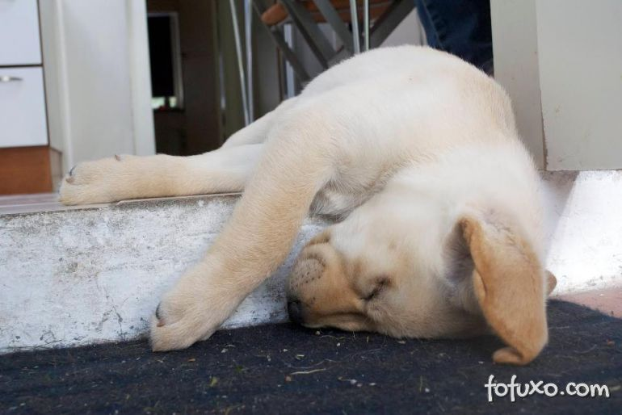

Pandora
Idade: 6 meses
Caracteristicas:
Gostar de dormir e brincar um pouco antes de dormir
A Pandora é a preguiça em cachorro, adora tirar um cochilo. Se fizer
carinho nela então, ai que ela dorme bem rapidinho. A Pandora se dá
muito bem com crianças e outros cachorros. Ela também gosta muito de
brincar ou passear.
